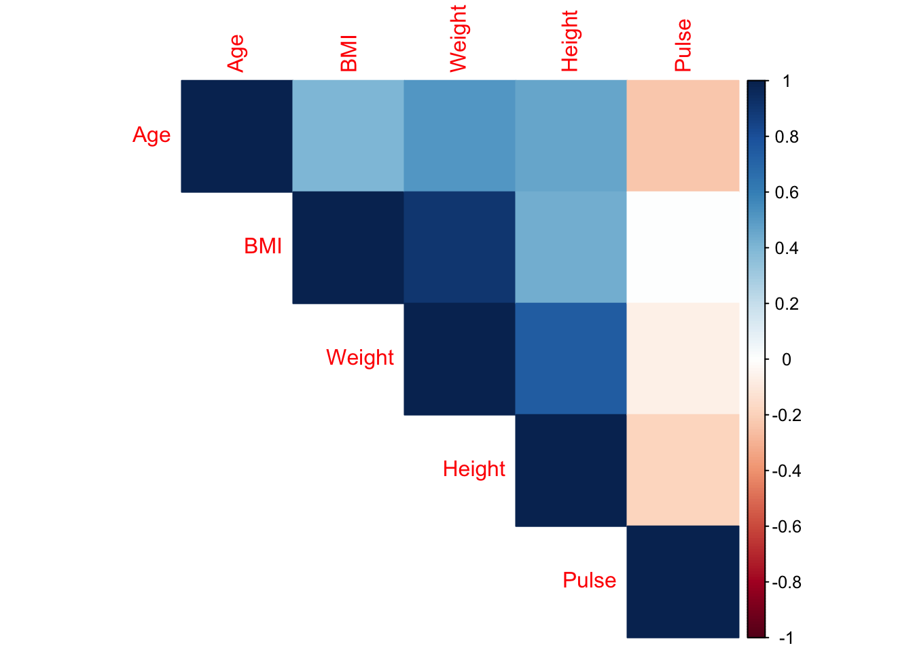
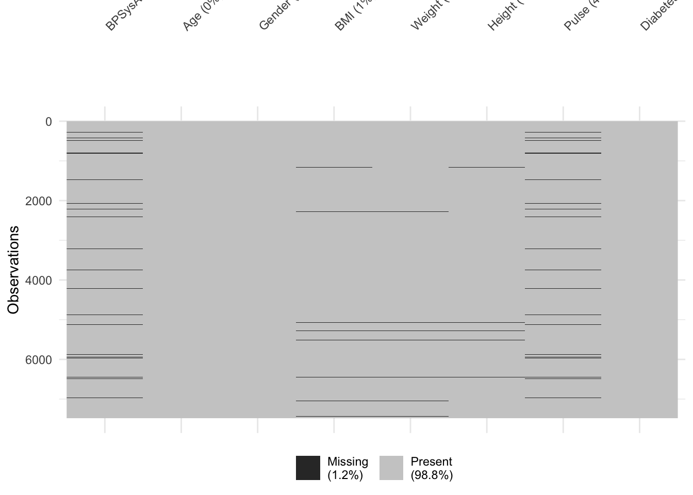
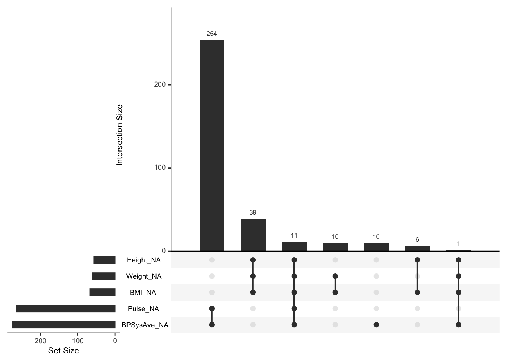

Covariance, correlation and regression describe relationships between variables, but answer different questions. Correlation is a standardised measure of association, whereas regression models a dependent variable as a function of one or more predictors.
In linear regression, the coefficients describe the expected change in the dependent variable associated with a change in a predictor. Standard errors describe uncertainty in those estimates, while residual errors (or residuals) describe the differences between observed and predicted values.
Linear regression is subject to a number of assumptions. The validity of the data and model for the research question are perhaps the most important assumptions. Other considerations include linearity, independence of errors, homoscedasticity and the approximate normality of residual errors.
Ordinary least squares estimates the regression coefficients by minimising the sum of squared residuals. The same general linear-model framework connects regression, the t-test and analysis of variance (ANOVA).
Multiple regression can be used for estimation, hypothesis testing or prediction. Model-building decisions should follow the analytical purpose and should account for missingness, collinearity, interactions and the scale of the predictors.
ANOVA compares variation between group means given the variation within groups. A statistically significant overall test indicates that not all means are equal. Post-hoc comparisons are needed to identify which groups differ.
L2-1 On the Relationships Between Variables
In this section, I will briefly introduce three ways of describing relationships between variables: covariance, correlation and regression. These concepts are related, but they are not interchangeable. Covariance and correlation describe how two variables vary together, whereas regression specifies an outcome variable and models how its expected value changes with one or more predictors.
Covariance
Covariance is a scale-dependent measure of how two variables, such as \(X\) and \(Y\), vary together. For a sample of \(n\) paired observations, the sample covariance is: \[
\operatorname{Cov}(X,Y)=\frac{\sum_{i=1}^{n}(x_i-\bar{x})(y_i-\bar{y})}{n-1}.
\]
The sign of the covariance describes the direction of the linear relationship:
\(\operatorname{Cov}(X,Y)<0\) indicates that larger values of one variable tend to occur with smaller values of the other.
\(\operatorname{Cov}(X,Y)\approx0\) indicates approximately no linear relationship.
\(\operatorname{Cov}(X,Y)>0\) indicates that the variables tend to increase together.
Variance is a special case of covariance in which the two variables are the same:
One limitation of covariance is that its magnitude depends on the units and scales of both variables. A covariance between weight in kilograms and height in centimetres cannot be directly compared with a covariance calculated using other units or variables.
Correlation
Correlation resolves this problem by standardising the covariance, i.e. Pearson’s correlation coefficient is calculated by dividing the covariance by the standard deviations of the two variables:
The resulting coefficient r ranges from -1 to 1. A value close to -1 indicates a strong negative linear relationship, a value close to 1 indicates a strong positive linear relationship, and a value close to zero indicates little or no linear relationship.
Pearson’s correlation coefficient is suitable for linear relationships. For a monotonic relationship that may be nonlinear, we can instead use a rank-based measure such as Spearman’s rank correlation coefficient or Kendall’s tau. A monotonic relationship consistently moves in one direction: as one variable increases, the other either consistently increases or consistently decreases. Kendall’s tau compares concordant and discordant pairs and can be more robust than Spearman’s correlation in some settings.
It is important to plot the paired data before interpreting a correlation coefficient. A single coefficient can conceal nonlinear relationships, clusters, influential observations and other important features of the data. Also remember that correlation does not establish causation.
In R, covariance and correlation can be calculated using the functions cov() and cor():
# Example using selected numerical variables from NHANESlibrary(NHANES)nhanes_variables <- NHANES[, c("Age", "BMI", "Weight", "Height", "Pulse")]# Pairwise complete observations allow each pair to use its available datanhanes_cov <-cov(nhanes_variables, use ="pairwise.complete.obs")nhanes_cor <-cor(nhanes_variables, use ="pairwise.complete.obs")nhanes_cov
A covariance or correlation matrix is a square matrix containing the pairwise covariances or correlations among a set of variables. In a covariance matrix, the diagonal elements are the variances of the individual variables. In a correlation matrix, the diagonal elements are all equal to one because each variable is perfectly correlated with itself.
We can visualise the correlation matrix using, for example, the corrplot package:
library(corrplot)corrplot(nhanes_cor, method ="color", type ="upper")

Pair plots are another useful first step. They show the variables plotted against one another and can reveal linear or nonlinear patterns, clusters and unusual observations.
From Association to Regression
Linear regression models describe the relationship between a dependent variable, also called an outcome or response \(Y\), and one or more independent variables or predictors \(X\):
The intercept \(\beta_0\) describes the expected value of \(Y\) when \(X=0\). The slope \(\beta_1\) describes the expected change in \(Y\) associated with a one-unit increase in \(X\). The error term \(\varepsilon_i\) represents the part of the observation that is not explained by the deterministic component of the model.
We usually assign the dependent variable to the effect or outcome that we want to study. The independent variables are then the exposures, treatments, characteristics or predictors that may explain variation in that outcome. Regression can therefore be used to estimate relationships in a sample and, subject to the study design and assumptions, make inferences about a population.
L2-2 Linear Regression
Regression has a long history. Francis Galton used the term when analysing the heights of parents and their adult children in the 1886 publication, Regression towards Mediocrity in Hereditary Stature. Galton observed that taller parents tended to have taller children, but that the children’s heights also tended to be closer to the population mean. Galton called this regression towards mediocrity; today, we refer to this as regression towards the mean.
Galton’s research was also connected to the development of eugenics, an important and deeply problematic part of the early developments in statistics. His work influenced Karl Pearson and Ronald Fisher and contributed to what later became quantitative genetics. We can recognise the statistical importance of these methods while also acknowledging the context in which parts of this work were developed and applied.
A Simple Regression Model
We can use Galton’s height data to ask the following research question:
To what degree does parents’ average height explain variability in the height of their adult children?
Here, \(\widehat{\text{child height}}\) is the predicted or expected child height given the parents’ average height. The intercept \(\beta_0\) is the predicted child height when parent height is zero. That value is not scientifically meaningful because a parent height of zero is impossible. We can make the intercept more useful by centring parent height around a relevant value, such as its sample mean. The intercept would then represent the expected child height for parents of average height.
The slope \(\beta_1\) is the expected change in child height associated with a one-unit increase in parent height. In the example presented in the slides, the estimated slope is approximately 0.52. This means that for every additional inch in parents’ average height, the child’s expected adult height increases by approximately 0.52 inches.
In R, we can fit the model using the function lm():
# The object height_df contains child_height and parent_heightmodel_fit <-lm(child_height ~ parent_height, data = height_df)summary(model_fit)
The formula places the dependent variable on the left of ~ and the predictor on the right. The default summary output contains several types of information:
Coefficient estimate: the estimated intercept or slope.
Standard error: the uncertainty or sampling variability associated with a coefficient estimate.
t-value: the coefficient estimate divided by its standard error.
P-value: under the null hypothesis and model assumptions, the probability of obtaining a t-statistic at least as extreme as the observed value.
Residual standard error: an estimate of the typical unexplained deviation of observations from the fitted line.
Degrees of freedom: for this simple model, the number of observations minus the two estimated coefficients.
\(R^2\): the proportion of observed variation in the outcome explained by the fitted model.
F-statistic: a comparison of the fitted model with a model containing only an intercept.
For the Galton example in the slides, the fitted model is approximately:
The \(R^2\) is approximately 0.16. Therefore, parent height explains about 16% of the variation in child height in this sample. This does not mean that the model is useless. The interpretation of \(R^2\) depends on the research question, the variability of the population and the intended application.
The residual for observation \(i\) is the difference between the observed and fitted values:
\[
e_i=y_i-\widehat{y}_i.
\]
Residuals are central to regression diagnostics because they describe the part of the data that the model has not explained.
Assumptions of Linear Regression
Gelman and Hill order the assumptions and considerations for linear regression approximately as follows:
Validity: the data and model map to the research question.
Additivity and linearity: the deterministic relationship between the predictors and outcome is appropriately represented by an additive linear model.
Independence of errors: the residual errors are independent, conditional on the predictors included in the model.
Homoscedasticity: the residual errors have approximately constant variance across the fitted values.
Normality: the residual errors are approximately normally distributed.
This ordering matters. A perfectly normal residual distribution cannot rescue a model based on an invalid outcome measure or a study design that does not address the research question. Normality is often the least important of these assumptions for estimating the regression coefficients (and perhaps the most misunderstood?), although substantial departures can affect small-sample inference and prediction intervals. A common misconception is that linear models require the dependent data to be normally distributed, this is not the case. We are interested in the approximate normality of the residual errors meaning the residuals are approximately symmetric around zero.
Validity concerns what the data actually represent. In the height example, we should ask when the children’s height was measured, whether the measurements represent adult height, how parent height was defined and whether the sampled families represent the population to which we want to generalise.
Linearity can first be assessed by plotting the outcome against the predictor. If the relationship is clearly nonlinear, possible solutions include transforming a variable, introducing polynomial or spline terms, or using another model that represents the scientific relationship more appropriately. Adding terms merely to improve a diagnostic plot, without considering the research question, is not a sufficient modelling strategy.
The remaining assumptions mainly concern the residual error structure. The standard diagnostic plots produced by plot(model_fit) are:
Residuals versus fitted values: used to look for nonlinearity and non-constant variance. Ideally, the residuals form an approximately random band around zero.
Normal Q-Q plot: compares the standardised residuals with the theoretical quantiles of a normal distribution. Departures in the tails may indicate skewness, heavy tails or unusual observations.
Scale-location plot: displays the spread of the root standardised residuals across fitted values and helps assess homoscedasticity.
Residuals versus leverage: helps identify observations that may have a large influence on the fitted coefficients. Cook’s distance combines residual size and leverage as an indicator of influence.
These plots are diagnostic tools, not pass-or-fail tests. An observation with high leverage has an unusual predictor value. It becomes particularly influential when it also has a substantial residual. Influential observations should be checked for data errors and scientific relevance, but they should not be removed automatically.
Confidence and Prediction Intervals
Regression can be used to estimate the mean outcome at a predictor value or to predict a future observation. These require different intervals.
A confidence interval describes uncertainty in the estimated conditional mean. Under repeated sampling, 95% of intervals constructed in the same way would contain the true conditional population mean. The interval is usually narrowest near predictor values where the data provide the most information.
A prediction interval describes uncertainty for a future individual observation. It includes both uncertainty in the estimated mean and the residual variation between observations. It is therefore wider than the corresponding confidence interval.
# Confidence interval for the conditional meanpredict(model_fit, newdata = new_data,interval ="confidence", level =0.95)# Prediction interval for a future observationpredict(model_fit, newdata = new_data,interval ="prediction", level =0.95)
Interpreting Coefficients and Validating Predictions
A regression coefficient can be given a predictive interpretation: it describes the average difference in the outcome associated with a specified difference in the predictor, conditional on the other terms in the model. A causal or counterfactual interpretation is stronger. It describes the expected change in an outcome if the predictor were actively changed and requires additional assumptions about study design, confounding and the data-generating process. A large coefficient, or a small P-value, does not by itself establish causality.
Likewise, a linear coefficient describes only the relationship represented in the fitted model. It does not establish that the true relationship is linear, and it may conceal a curvilinear association. Always plot the data before estimating and interpreting the model.
For prediction, model performance should be assessed using data that were not used to fit the model. We can withhold part of the original dataset for validation, although this reduces the data available for model development. A more rigorous test is external validation using a new dataset from the target population or setting.
L2-4 The Method of Least Squares
The method of least squares is associated with the work of Adrien-Marie Legendre and Carl Friedrich Gauss. The underlying idea is straightforward: choose the model parameters that minimise the sum of the squared vertical distances between the observations and the fitted line.
For a general function \(p(x)\), the least-squares objective is:
\[
L=\sum_{i=1}^{n}\left[y_i-p(x_i)\right]^2.
\]
For a simple linear model, \(p(x_i)=\beta_0+\beta_1x_i\), and the objective becomes:
Squaring prevents positive and negative residuals from cancelling one another and gives relatively greater weight to large residuals. Minimising this objective produces closed-form estimates for the simple regression slope and intercept:
Normally, of course, we would use the well-tested lm() function. Defining the calculation manually is useful for understanding what the software is estimating.
The model F-test considers whether the predictors jointly improve the model relative to an intercept-only model. For a model with \(k\) slope coefficients, the null hypothesis is:
\[
H_0:\beta_1=\beta_2=\cdots=\beta_k=0.
\]
The individual t-tests and the overall F-test answer related but distinct questions. In a model with one predictor, the F-statistic equals the square of the t-statistic for the slope.
Multiple Linear Regression in Matrix Form
The same least-squares framework extends to multiple predictors. We can write the model as:
where \(\mathbf{y}\) is an \(n\times1\) vector of outcomes, \(\mathbf{X}\) is an \(n\times k\) design matrix and \(\boldsymbol{\beta}\) is a \(k\times1\) vector of coefficients. Provided that \(\mathbf{X}^{T}\mathbf{X}\) is invertible, the ordinary least-squares estimate is:
This matrix expression is the general version of the simple slope and intercept calculations above.
L2-5 Data Formatting
Before fitting a statistical model, we need to organise the data in a form that the software and the analysis can use. Two common structures are wide and long data.
Wide and Long Data
In a wide dataset, repeated measurements or categories are stored in separate columns. For example, body weight measured at baseline, one week, three weeks and six weeks might be stored as four columns for each participant.
In a long dataset, each measurement occupies a separate row. One column identifies the participant, another identifies the measurement occasion or condition, and another contains the observed value. Long format is often convenient for plotting, grouped summaries, repeated-measures analyses and mixed-effects models.
The preferred structure depends on what we want to do. Wide format can be convenient for presenting data and for some calculations across measurements. Long format is commonly expected by modelling and visualisation functions.
We can convert wide data to long data using pivot_longer() from tidyr:
When reshaping data, always check that the participant identifier and any grouping variables uniquely identify the intended observations. Unexpected duplicate combinations may produce list-columns or aggregated values.
Dummy Variables
Regression models require categorical predictors to be represented numerically. This is commonly achieved using dummy or indicator variables. For a categorical variable with \(K\) levels, we usually include \(K-1\) dummy variables when the model also contains an intercept. The omitted level acts as the reference category.
For a binary variable such as sex recorded as female and male, one indicator is sufficient. If male is the reference, a variable such as Sex_female takes the value zero for males and one for females. The associated coefficient then estimates the expected difference between females and males, conditional on the other terms in the model.
In most R modelling functions, a variable stored as a factor is converted to dummy variables automatically:
data$Sex <-factor(data$Sex)model_fit <-lm(BW ~ Sex, data = data)model.matrix(model_fit)
The reference level can be set explicitly:
data$Sex <-relevel(factor(data$Sex), ref ="male")
Creating dummy variables manually is sometimes useful for inspecting or exporting a design matrix, but it is usually unnecessary for fitting a model in R.
L2-6 Linear Regression, the t-Test and ANOVA
The t-test, ANOVA and linear regression are often taught as separate statistical methods. However, they are closely connected through the general linear-model framework. In simple cases, they test equivalent hypotheses and can produce equivalent results.
The Two-Sample t-Test as a Regression Model
Suppose we compare low-density lipoprotein (LDL) levels between participants of normal weight and participants who are overweight. A two-sample t-test evaluates the difference between the two group means. The Welch t-statistic is:
where Overweight equals zero for the reference group and one for the overweight group. In this parameterisation, \(\beta_0\) is the mean LDL level in the reference group and \(\beta_1\) is the difference in mean LDL between the groups.
The null hypothesis is therefore:
\[
H_0:\beta_1=0,
\]
which is equivalent to testing that the two population means are equal.
# Welch two-sample t-testt.test(LDL ~ GROUP, data = ldl_dat, var.equal =FALSE)# Regression model using the same two groupsldl_model <-lm(LDL ~ GROUP, data = ldl_dat)summary(ldl_model)
With equal-variance assumptions and equivalent coding, the conventional two-sample t-test and ordinary linear regression give the same test of the group difference. Welch’s t-test allows the two groups to have unequal variances, so its standard error and degrees of freedom may differ from ordinary least squares.
Generalised Least Squares for Unequal Variance
Unequal residual variance, or heteroscedasticity, does not necessarily make the ordinary least-squares coefficient estimates biased. However, it can affect the model-based standard errors, confidence intervals and P-values.
One possible approach is generalised least squares (GLS), which allows the residual variance structure to be modelled. For example, we can allow the variance to differ between groups using gls() from the nlme package:
library(nlme)# Ordinary least-squares modelldl_lm <-lm(LDL ~ GROUP, data = ldl2_dat)# GLS model allowing different residual variances by groupldl_gls <-gls( LDL ~ GROUP,data = ldl2_dat,weights =varIdent(form =~1| GROUP))summary(ldl_lm)summary(ldl_gls)
The variance model should reflect a feature that is supported by the data and study design. Robust standard errors are another option, although these are not covered in detail here.
ANOVA as a Regression Model
Now suppose LDL is compared across three groups: normal weight, overweight and obese. A one-way ANOVA tests the null hypothesis that all population means are equal:
\[
H_0:\mu_1=\mu_2=\mu_3.
\]
If normal weight is used as the reference group, the corresponding regression model contains indicators for overweight and obesity:
Thus, the overall ANOVA F-test asks whether the model containing the group indicators explains more variation than an intercept-only model.
# ANOVA formulationldl_aov <-aov(LDL ~ GROUP, data = ldl3_dat)summary(ldl_aov)# Equivalent regression formulationldl_lm <-lm(LDL ~ GROUP, data = ldl3_dat)anova(ldl_lm)summary(ldl_lm)
Regression is often the more flexible language because it naturally extends to continuous predictors, multiple categorical variables, interactions and adjustment variables. This does not make the classical tests obsolete. Instead, it shows that they can be understood as special cases of a broader modelling framework.
Regression models can also shift the emphasis from a binary decision about statistical significance to estimates of effect size and uncertainty. Coefficients and confidence intervals often answer the scientific question more directly than a P-value alone.
L2-7 Multiple Linear Regression
Simple linear regression contains one predictor. Multiple linear regression extends the model to two or more predictors:
Multiple regression can be used for several purposes:
estimating the association between an outcome and several factors;
estimating an association while adjusting for other variables;
comparing multiple groups;
testing prespecified hypotheses; and
predicting future outcomes.
These purposes overlap, but they are not identical. A model suitable for estimating a specific effect is not automatically the best prediction model, and a model optimised for prediction may not provide a simple causal interpretation.
Example: Systolic Blood Pressure in NHANES
We will use the NHANES data to explore systolic blood pressure among adults aged 18 years and older. Potential predictors include age, gender, BMI, weight, height, pulse and diabetes status.
A rough rule of thumb sometimes suggested for ordinary linear regression is at least 10-15 observations per estimated predictor coefficient. This is not a universal sample-size calculation: the required sample depends on the research question, expected effect sizes, variability, collinearity, model complexity and intended use. The NHANES example contains many observations, so the more immediate concerns are data quality, model specification and missingness.
Missing Data
Before modelling, we should examine which values are missing and whether variables tend to be missing together. The naniar package provides several useful visualisations:
library(naniar)vis_miss(nhanes_bp)

gg_miss_upset(nhanes_bp)

Missing-data mechanisms are commonly described as:
Missing completely at random (MCAR): the probability of missingness does not depend on observed or missing data.
Missing at random (MAR): after conditioning on observed data, missingness does not depend on the missing value itself.
Missing not at random (MNAR): missingness continues to depend on unobserved values even after accounting for the observed data.
Complete-case, or listwise, deletion retains only rows with complete data for all variables in the model. It may be reasonable when relatively little information is missing and the assumptions needed for the analysis are plausible. However, it can reduce precision and introduce bias when the retained observations differ systematically from those excluded.
Single imputation replaces each missing value once, for example with a mean or median. Although simple, it usually understates uncertainty and can distort relationships among variables. Multiple imputation is generally more principled under appropriate assumptions because it creates several completed datasets and incorporates uncertainty about the missing values. Detailed imputation strategies are beyond the scope of this section.
Additivity and Linearity
We can begin exploring additivity and linearity using pairwise plots of the numerical variables. These plots show the bivariate relationships, the univariate distributions and, depending on the function, the pairwise correlations.
The aim is not to prove that every relationship is perfectly linear. We want to determine whether an additive linear model is a reasonable approximation for the analytical purpose and identify transformations or interactions that may be scientifically justified.
Collinearity and Identifiability
Collinearity occurs when one predictor is strongly related to one or more other predictors. For example, BMI, weight and height are mathematically and empirically related. Severe collinearity makes it difficult to identify their separate coefficients: estimates can become unstable and standard errors can become large, even when the model predicts the outcome reasonably well.
The variance inflation factor (VIF) is one diagnostic for collinearity:
There is no universal VIF cut-off that replaces scientific judgment. Large values indicate that a coefficient’s variance has been inflated by relationships among predictors. Possible responses include removing redundant variables, combining related measures, using dimension-reduction or regularisation methods, or redefining the research question. Variables should not be removed mechanically when they are important confounders or central to the intended estimand.
In this example, we could fit a reduced model after considering the redundancy among BMI, weight and height:
Call:
lm(formula = BPSysAve ~ Age + Gender + BMI + Height + Pulse +
Diabetes, data = nhanes_bp)
Residuals:
Min 1Q Median 3Q Max
-55.474 -9.191 -1.130 8.040 100.221
Coefficients:
Estimate Std. Error t value Pr(>|t|)
(Intercept) 103.38120 4.35355 23.746 < 2e-16 ***
Age 0.40352 0.01103 36.583 < 2e-16 ***
Gendermale 6.20664 0.49452 12.551 < 2e-16 ***
BMI 0.25327 0.02744 9.229 < 2e-16 ***
Height -0.10081 0.02463 -4.093 4.31e-05 ***
Pulse 0.07278 0.01555 4.682 2.90e-06 ***
DiabetesYes 0.81462 0.63285 1.287 0.198
---
Signif. codes: 0 '***' 0.001 '**' 0.01 '*' 0.05 '.' 0.1 ' ' 1
Residual standard error: 15.15 on 7141 degrees of freedom
(333 observations deleted due to missingness)
Multiple R-squared: 0.2074, Adjusted R-squared: 0.2067
F-statistic: 311.4 on 6 and 7141 DF, p-value: < 2.2e-16
Interactions
An additive model assumes that the effect of one predictor is constant across the values of the other predictors. An interaction allows that association to differ. For example, an Age * Gender interaction asks whether the association between age and systolic blood pressure differs by gender.
Call:
lm(formula = BPSysAve ~ Age * Gender + BMI + Height + Pulse +
Diabetes, data = nhanes_bp)
Residuals:
Min 1Q Median 3Q Max
-58.343 -9.149 -0.883 7.997 99.561
Coefficients:
Estimate Std. Error t value Pr(>|t|)
(Intercept) 95.29420 4.35254 21.894 < 2e-16 ***
Age 0.52589 0.01456 36.113 < 2e-16 ***
Gendermale 18.07472 1.05570 17.121 < 2e-16 ***
BMI 0.25446 0.02714 9.376 < 2e-16 ***
Height -0.08965 0.02438 -3.678 0.000237 ***
Pulse 0.07905 0.01538 5.139 2.84e-07 ***
DiabetesYes 1.00034 0.62605 1.598 0.110118
Age:Gendermale -0.25996 0.02049 -12.685 < 2e-16 ***
---
Signif. codes: 0 '***' 0.001 '**' 0.01 '*' 0.05 '.' 0.1 ' ' 1
Residual standard error: 14.98 on 7140 degrees of freedom
(333 observations deleted due to missingness)
Multiple R-squared: 0.2249, Adjusted R-squared: 0.2241
F-statistic: 295.9 on 7 and 7140 DF, p-value: < 2.2e-16
The * notation adds both main effects and their interaction. Two-way interactions can quickly produce many coefficients, so they should be guided by the scientific question rather than added indiscriminately. When an interaction is included, the main effects are conditional: for example, the coefficient for age represents the age association in the reference gender.
Centring and Standardising Predictors
Centring subtracts a reference value, usually the sample mean, from a predictor:
\[
X_{\text{centred}}=X-\bar{X}.
\]
This does not change the fitted values of a linear model, but it changes the interpretation of the intercept. If age is centred at its mean, the intercept represents the expected outcome for a participant of average age, conditional on the reference values of the other predictors. Centring is also helpful when interpreting models with interactions.
Standardisation additionally divides by the standard deviation:
The coefficient then represents the expected change in the outcome associated with a one-standard-deviation increase in the predictor. Scaling can help compare coefficients measured in very different units and is important for some regularised models. It does not, however, make fundamentally different constructs directly comparable.
Building Models for Hypothesis Testing and Prediction
When the purpose is confirmatory hypothesis testing, the model should follow the prespecified research question. Important variables should not be removed merely because their individual P-values exceed 0.05. Data-driven stepwise selection can inflate Type I error, produce unstable models and make standard P-values and confidence intervals difficult to interpret.
When the purpose is prediction, the emphasis shifts to performance on new data. Potentially useful predictors may be retained even when individual coefficients are not statistically significant. Model comparison should use validation data or resampling methods, and performance should be described using measures relevant to the prediction task. Overfitting occurs when a model learns peculiarities of the development sample that do not generalise.
In both settings, diagnostics remain important. We should examine residuals, influential observations, functional form and the plausibility of the model for the intended population. The analytical purpose should be stated before choosing the modelling strategy.
L2-8 ANOVA: Analysis of Variance
In experimental research, we may want to compare a continuous outcome across several treatments or conditions. The treatment is called a factor, and the individual treatments or conditions are its levels. A one-way ANOVA compares the mean outcome across \(K\) levels of one factor, usually when \(K\geq3\).
The null and alternative hypotheses are:
\[
H_0:\mu_1=\mu_2=\cdots=\mu_K,
\]
and
\[
H_1:\text{not all population means are equal}.
\]
The alternative does not state that every pair of means differs. It states only that at least one population mean differs from another.
Comparing Between- and Within-Group Variation
Ronald Fisher developed ANOVA while working at Rothamsted Experimental Station, where agricultural experiments examined outcomes such as crop yield under different varieties and fertilisers. The central idea is to compare variation between the group means with variation among observations within the groups.
If the group means differ substantially while the observations within each group are relatively similar, there is evidence against the null hypothesis. If within-group variability is large relative to the differences between means, it becomes more difficult to distinguish a treatment effect from random variation.
The total sum of squares can be partitioned into treatment and error components:
Under the null hypothesis and model assumptions, the statistic follows an F-distribution with \(K-1\) and \(N-K\) degrees of freedom.
One-Way ANOVA in R
The slides use potato-yield data based on an early Rothamsted report. A potato variety is exposed to basal, chloride-based or sulphate-based manure, and the outcome is yield in pounds.
potato_aov <-aov(yield_lbs ~ group, data = greatscott)summary(potato_aov)
The same analysis can be expressed as a linear regression and passed to anova():
potato_lm <-lm(yield_lbs ~ group, data = greatscott)anova(potato_lm)summary(potato_lm)
In the example, the overall P-value is approximately 0.048. At a prespecified significance level of 0.05, we reject the null hypothesis that all three population means are equal. The test does not yet identify which groups differ.
Post-Hoc Comparisons
After finding evidence of an overall difference, we can perform pairwise comparisons. Tukey’s honest significant difference (HSD) procedure compares all pairs of group means while controlling the family-wise Type I error rate.
TukeyHSD(potato_aov)
In the example, the sulphate and chloride groups differ statistically. The comparison should be interpreted using the estimated difference and its confidence interval, not only the adjusted P-value.
The traditional sequence is to perform post-hoc comparisons after a statistically significant overall ANOVA. Prespecified comparisons or contrasts can instead be planned directly when the research question concerns particular group differences. Such contrasts may be more informative and efficient than testing every possible pair.
Extending the Model to More Than One Factor
The historical potato experiments included several potato varieties as well as different manures. A more complete additive model therefore includes both factors:
potato_aov_2 <-aov(yield_lbs ~ manure + variety, data = potatoes)summary(potato_aov_2)
If the effect of manure may differ by potato variety, we can add an interaction:
The interaction asks whether differences among manure levels are consistent across varieties. As with multiple regression, the model structure should follow the experimental design and research question.
ANOVA relies on the same broad assumptions as a linear regression with categorical predictors: validity, independent errors, an appropriate additive structure, approximately constant residual variance and approximately normal residual errors. The design of the experiment—particularly randomisation, replication and blocking—is fundamental to the validity of the analysis.
Nonparametric Alternative: The Kruskal-Wallis Test
The Kruskal-Wallis test is a rank-based extension of the Wilcoxon-Mann-Whitney test to three or more independent groups. It can be useful when an ANOVA model is not an adequate description of the data and a rank-based comparison is scientifically meaningful.
kruskal.test(yield_lbs ~ group, data = greatscott)
The Kruskal-Wallis test does not simply test equality of means. It evaluates whether the group distributions, represented through their ranks, differ. An interpretation as a test of location or medians requires additional assumptions about the shapes and spreads of the group distributions. If the overall test is statistically significant, adjusted post-hoc rank comparisons are needed to determine which groups differ.